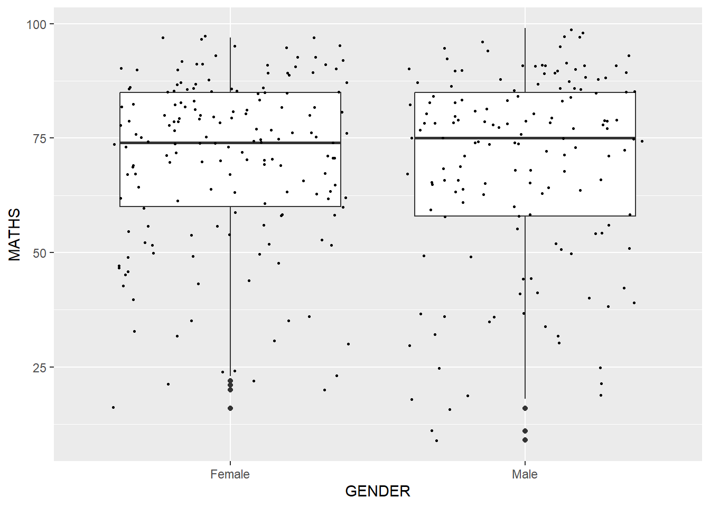

Code
pacman::p_load(tidyverse)The code chunk below uses p_load() of pacman package to check if tidyverse packages are installed in the computer. If they are, then they will be launched into R.
pacman::p_load(tidyverse)The code chunk below imports exam_data.csv into R environment by using read_csv() function of readr package.
readr is one of the tidyverse package.
exam_data <- read_csv("data/Exam_data.csv")Year end examination grades of a cohort of primary 3 students from a local school.
There are a total of seven attributes. Four of them are categorical data type and the other three are in continuous data type.
The categorical attributes are: ID, CLASS, GENDER and RACE.
The continuous attributes are: MATHS, ENGLISH and SCIENCE.
ggplot2 is an R package for declaratively creating data-driven graphics based on The Grammar of Graphics

It is also part of the tidyverse family specially designed for visual exploration and communication.

First, let us compare how R Graphics, the core graphical functions of Base R and ggplot plot a simple histogram.
hist(exam_data$MATHS)
ggplot(data=exam_data, aes(x = MATHS)) +
geom_histogram(bins=10,
boundary = 100,
color="black",
fill="grey") +
ggtitle("Distribution of Maths scores")
Why ggplot2 is recommended?
The transferable skills from ggplot2 are not the idiosyncrasies of plotting syntax, but a powerful way of thinking about visualisation, as a way of mapping between variables and the visual properties of geometric objects that you can perceive.
Before we getting started using ggplot2, it is important for us to understand the principles of Grammer of Graphics.
Grammar of Graphics is a general scheme for data visualization which breaks up graphs into semantic components such as scales and layers. It was introduced by Leland Wilkinson (1999) Grammar of Graphics, Springer. The grammar of graphics is an answer to a question:
What is a statistical graphic?
In the nutshell, Grammar of Graphics defines the rules of structuring mathematical and aesthetic elements into a meaningful graph.
There are two principles in Grammar of Graphics, they are:
Graphics = distinct layers of grammatical elements
Meaningful plots through aesthetic mapping
A good grammar of graphics will allow us to gain insight into the composition of complicated graphics, and reveal unexpected connections between seemingly different graphics (Cox 1978). It also provides a strong foundation for understanding a diverse range of graphics. Furthermore, it may also help guide us on what a well-formed or correct graphic looks like, but there will still be many grammatically correct but nonsensical graphics.
ggplot2 is an implementation of Leland Wilkinson’s Grammar of Graphics. Figure below shows the seven grammars of ggplot2.

Reference: Hadley Wickham (2010) “A layered grammar of graphics.” Journal of Computational and Graphical Statistics, vol. 19, no. 1, pp. 3–28.
A short description of each building block are as follows:
Data: The dataset being plotted.
Aesthetics take attributes of the data and use them to influence visual characteristics, such as position, colours, size, shape, or transparency.
Geometrics: The visual elements used for our data, such as point, bar or line.
Facets split the data into subsets to create multiple variations of the same graph (paneling, multiple plots).
Statistics, statiscal transformations that summarise data (e.g. mean, confidence intervals).
Coordinate systems define the plane on which data are mapped on the graphic.
Themes modify all non-data components of a plot, such as main title, sub-title, y-aixs title, or legend background.
Let us call the function using the code chunk on the right.ggplot()
ggplot(data=exam_data)
A blank canvas appears.
ggplot() initializes a ggplot object.
The data argument defines the dataset to be used for plotting.
If the dataset is not already a data.frame, it will be converted to one by .fortify()
The aesthetic mappings take attributes of the data and and use them to influence visual characteristics, such as position, colour, size, shape, or transparency. Each visual characteristic can thus encode an aspect of the data and be used to convey information.
All aesthetics of a plot are specified in the aes() function call (in later part of this lesson, you will see that each geom layer can have its own aes specification)
Code chunk below adds the aesthetic element into the plot.
ggplot(data=exam_data,
aes(x= MATHS))
Geometric objects are the actual marks we put on a plot. Examples include:
geom_point for drawing individual points (e.g., a scatter plot)
geom_line for drawing lines (e.g., for a line charts)
geom_smooth for drawing smoothed lines (e.g., for simple trends or approximations)
geom_bar for drawing bars (e.g., for bar charts)
geom_histogram for drawing binned values (e.g. a histogram)
geom_polygon for drawing arbitrary shapes
geom_map for drawing polygons in the shape of a map! (You can access the data to use for these maps by using the map_data() function).

A plot must have at least one geom; there is no upper limit. You can add a geom to a plot using the + operator.
For complete list, please refer to here.
The code chunk below plots a bar chart by using geom_bar().
ggplot(data=exam_data,
aes(x=RACE)) +
geom_bar()
In a dot plot, the width of a dot corresponds to the bin width (or maximum width, depending on the binning algorithm), and dots are stacked, with each dot representing one observation.
In the code chunk below, geom_dotplot() of ggplot2 is used to plot a dot plot.
ggplot(data=exam_data,
aes(x = MATHS)) +
geom_dotplot(dotsize = 0.5)
The y scale is not very useful, in fact it is very misleading.
The code chunk below performs the following two steps:
scale_y_continuous() is used to turn off the y-axis, and
binwidth argument is used to change the binwidth to 2.5.
ggplot(data=exam_data,
aes(x = MATHS)) +
geom_dotplot(binwidth=2.5,
dotsize = 0.5) +
scale_y_continuous(NULL,
breaks = NULL) 
geom_histogram()In the code chunk below, geom_histogram() is used to create a simple histogram by using values in MATHS field of exam_data.
ggplot(data=exam_data,
aes(x = MATHS)) +
geom_histogram() 
Note that the default bin is 30.
geom()In the code chunk below,
bins argument is used to change the number of bins to 20
fill argument is used to shade the histogram with light blue color
color argument is used to change the outline colour of the bars in black
ggplot(data=exam_data,
aes(x= MATHS)) +
geom_histogram(bins=20,
color="black",
fill="lightblue") 
ggplot(data=exam_data,
aes(x= MATHS,
fill = GENDER)) +
geom_histogram(bins=20,
color="grey30")
This approach can be used to colour, fill and alpha of the geometric.
geom-density() computes and plots kernel density estimate, which is a smoothed version of the histogram.
It is a useful alternative to the histogram for continuous data that comes from an underlying smooth distribution.
The code below plots the distribution of Maths scores in a kernel density estimate plot.
ggplot(data=exam_data,
aes(x = MATHS)) +
geom_density() 
The code chunk below plots two kernel density lines by using colour or fill arguments of aes()
ggplot(data=exam_data,
aes(x = MATHS,
colour = GENDER)) +
geom_density()
geom_boxplot() displays continuous value list. It visualises five summary statistics (the median, two hinges and two whiskers), and all “outlying” points individually.
The code chunk below plots boxplots by using geom_boxplot().
ggplot(data=exam_data,
aes(y = MATHS,
x= GENDER)) +
geom_boxplot() 
Notches are used in box plots to help visually assess whether the medians of distributions differ. If the notches do not overlap, this is evidence that the medians are different.
The code chunk below plots the distribution of Maths scores by gender in notched plot instead of boxplot.
ggplot(data=exam_data,
aes(y = MATHS,
x= GENDER)) +
geom_boxplot(notch=TRUE)
geom_violin is designed for creating violin plot. Violin plots are a way of comparing multiple data distributions. With ordinary density curves, it is difficult to compare more than just a few distributions because the lines visually interfere with each other. With a violin plot, it’s easier to compare several distributions since they’re placed side by side.
The code below plot the distribution of Maths score by gender in violin plot.
ggplot(data=exam_data,
aes(y = MATHS,
x= GENDER)) +
geom_violin()
geom_point() is especially useful for creating scatterplot.
The code chunk below plots a scatterplot showing the Maths and English grades of pupils by using .geom_point()
ggplot(data=exam_data,
aes(x= MATHS,
y=ENGLISH)) +
geom_point() 
The code chunk below plots the data points on the boxplots by using both and .geom_boxplot()geom_point()
ggplot(data=exam_data,
aes(y = MATHS,
x= GENDER)) +
geom_boxplot() +
geom_point(position="jitter",
size = 0.5) 
The Statistics functions statistically transform data, usually as some form of summary. For example:
frequency of values of a variable (bar graph)
a mean
a confidence limit
There are two ways to use these functions:
add a function and override the default geom, orstat_()
add a function and override the default stat.geom_()
stat()The boxplots below are incomplete because the positions of the means were not shown.
ggplot(data=exam_data,
aes(y = MATHS, x= GENDER)) +
geom_boxplot()
The code chunk below adds mean values by using stat_summary() function and overriding the default geom.
ggplot(data=exam_data,
aes(y = MATHS, x= GENDER)) +
geom_boxplot()+
stat_summary(geom = "point",
fun.y="mean",
colour ="red",
size=4) 
geom()The code chunk below adding mean values by using function and overriding the default stat.geom_()
ggplot(data=exam_data,
aes(y = MATHS, x= GENDER)) +
geom_boxplot() +
geom_point(stat="summary",
fun.y="mean",
colour ="red",
size=4) 
The scatterplot below shows the relationship of Maths and English grades of pupils. The interpretability of this graph can be improved by adding a best fit curve.

In the code chunk below, geom_smooth() is used to plot a best fit curve on the scatterplot.
ggplot(data=exam_data,
aes(x= MATHS, y=ENGLISH)) +
geom_point() +
geom_smooth(size=0.5)
Facetting generates small multiples (sometimes also called trellis plot), each displaying a different subset of the data. They are an alternative to aesthetics for displaying additional discrete variables. ggplot2 supports two types of factes, namely: facet_grid() and facet_wrap.
facet_wrap()facet_wrap wraps a 1d sequence of panels into 2d. This is generally a better use of screen space than facet_grid because most displays are roughly rectangular.
The code chunk below plots a trellis plot using .facet-wrap()
ggplot(data=exam_data,
aes(x= MATHS)) +
geom_histogram(bins=20) +
facet_wrap(~ CLASS)
facet_grid()facet_grid() forms a matrix of panels defined by row and column facetting variables. It is most useful when you have two discrete variables, and all combinations of the variables exist in the data.
The code chunk below plots a trellis plot using .facet_grid()
ggplot(data=exam_data,
aes(x= MATHS)) +
geom_histogram(bins=20) +
facet_grid(~ CLASS)
The Coordinates functions map the position of objects onto the plane of the plot. There are a number of different possible coordinate systems to use, they are:
By the default, the bar chart of ggplot2 is in vertical form.
ggplot(data=exam_data,
aes(x=RACE)) +
geom_bar()
The code chunk below flips the horizontal bar chart into vertical bar chart by using .coord_flip()
ggplot(data=exam_data,
aes(x=RACE)) +
geom_bar() +
coord_flip()
The scatterplot on the right is slightly misleading because the y-aixs and x-axis range are not equal.
ggplot(data=exam_data,
aes(x= MATHS, y=ENGLISH)) +
geom_point() +
geom_smooth(method=lm, size=0.5)
The code chunk below fixed both the y-axis and x-axis range from 0-100.
ggplot(data=exam_data,
aes(x= MATHS, y=ENGLISH)) +
geom_point() +
geom_smooth(method=lm,
size=0.5) +
coord_cartesian(xlim=c(0,100),
ylim=c(0,100))
Themes control elements of the graph not related to the data. For example:
background colour
size of fonts
gridlines
colour of labels
Built-in themes include: - (default) - theme_gray()theme_bw() - theme_classic()
A list of theme can be found at this link. Each theme element can be conceived of as either a line (e.g. x-axis), a rectangle (e.g. graph background), or text (e.g. axis title).
The code chunk below plot a horizontal bar chart using .theme_gray()
ggplot(data=exam_data,
aes(x=RACE)) +
geom_bar() +
coord_flip() +
theme_gray()
A horizontal bar chart plotted using .theme_classic()
ggplot(data=exam_data,
aes(x=RACE)) +
geom_bar() +
coord_flip() +
theme_classic()
A horizontal bar chart plotted using .theme_minimal()
ggplot(data=exam_data,
aes(x=RACE)) +
geom_bar() +
coord_flip() +
theme_minimal()
Hadley Wickham (2023) ggplot2: Elegant Graphics for Data Analysis. Online 3rd edition.
Winston Chang (2013) R Graphics Cookbook 2nd edition. Online version.
Healy, Kieran (2019) Data Visualization: A practical introduction. Online version